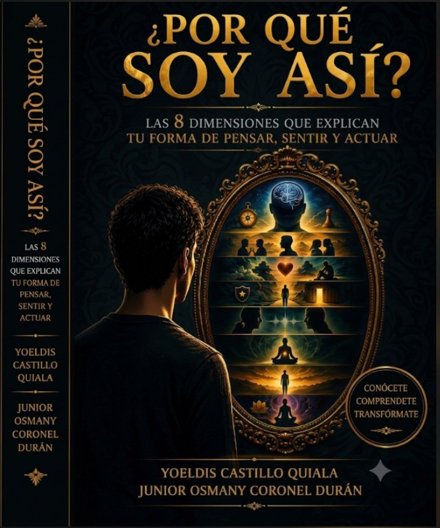

Desarrollo personal, psicología y comportamiento humano al alcance de tu mano.

Las 8 dimensiones que explican tu forma de pensar, sentir y actuar
¿Aún no tienes el libro? Descubre más sobre esta obra que te ayudará a conocerte mejor y transformar tu vida.
Este libro nació de una pregunta simple pero profunda: ¿Por qué soy así? Una interrogante que todos nos hemos hecho alguna vez, pero que pocas veces nos atrevemos a responder con honestidad.
A lo largo de estas páginas, te invitamos a emprender un viaje de autoconocimiento a través de 8 dimensiones esenciales que explican tu forma de pensar, sentir y actuar. No encontrarás etiquetas ni juicios, sino un espejo para mirarte con claridad y compasión.
Porque comprenderte no es el final del camino. Es el comienzo de una vida más consciente.